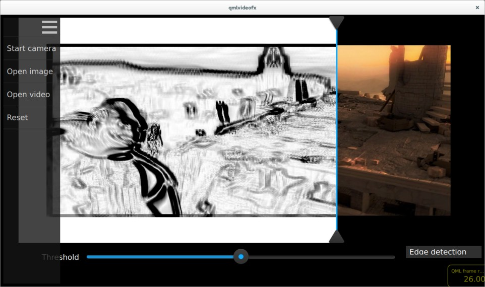
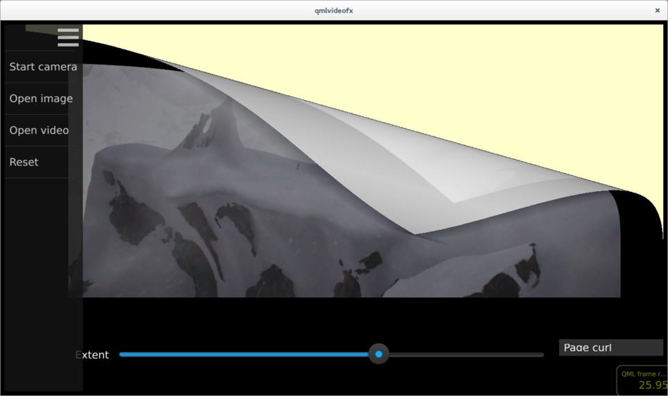
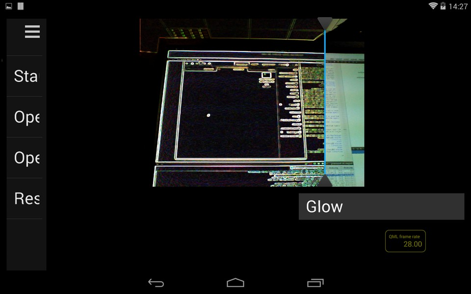
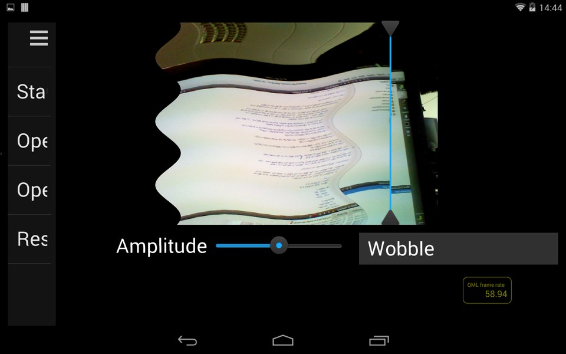
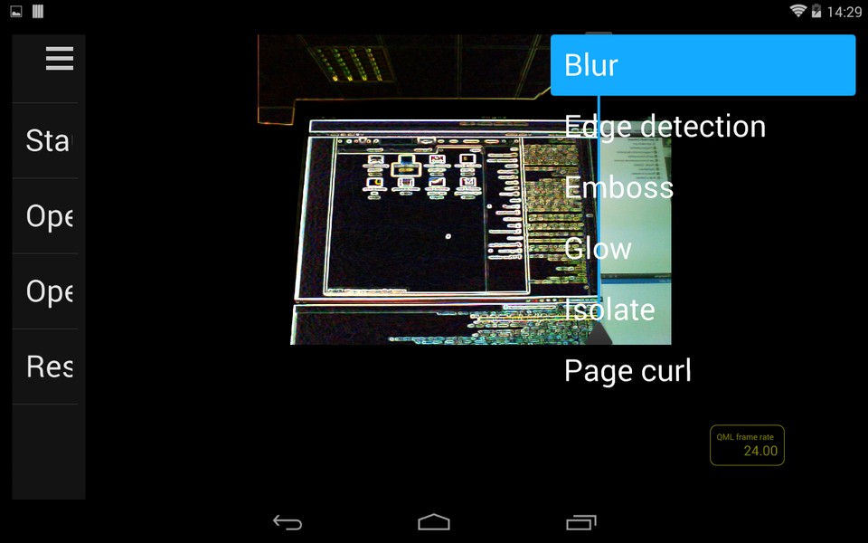

QML Video Shader Effects Example
Applying shader effects on video and camera viewfinder content.
Running the Example
To run the example from Qt Creator, open the Welcome mode and select the example from Examples. For more information, visit Building and Running an Example.
Overview
QML Video Shader Effects demonstrates how a ShaderEffect can be used to apply postprocessing effects, expressed in GLSL, to QML VideoOutput type.
It also shows how native code can be combined with QML to implement more advanced functionality - in this case, C++ code is used to calculate the QML frame rate. This value is rendered in QML in a semi-transparent item overlaid on the video content.
The following screenshots show shader effects being applied. In each case, the effect is implemented using a fragment shader.
Here we see an edge detection algorithm being applied to a video clip (Sintel from blender.org).

This image shows a page curl effect, applied to the same video clip.

Here we see a 'glow' effect (edge detection plus colour quantization) being applied to the camera viewfinder.

This image shows a 'wobble' effect applied to the viewfinder.

The application includes many more effects than the ones shown here - look for Effect*.qml files in the list of files below to see the full range.
Application Structure
Shader effects can be applied to video or viewfinder content using ShaderEffect, as shown in the following example, which applies a wiggly effect to the content:
import QtQuick 2.0 import QtMultimedia 5.0 Rectangle { width: 300 height: 300 color: "black" MediaPlayer { id: mediaPlayer source: "test.mp4" playing: true } VideoOutput { id: video anchors.fill: parent source: mediaPlayer } ShaderEffect { property variant source: ShaderEffectSource { sourceItem: video; hideSource: true } property real wiggleAmount: 0.005 anchors.fill: video fragmentShader: " varying highp vec2 qt_TexCoord0; uniform sampler2D source; uniform highp float wiggleAmount; void main(void) { highp vec2 wiggledTexCoord = qt_TexCoord0; wiggledTexCoord.s += sin(4.0 * 3.141592653589 * wiggledTexCoord.t) * wiggleAmount; gl_FragColor = texture2D(source, wiggledTexCoord.st); } " } }
In this application, the usage of the ShaderEffect and VideoOutput types is a bit more complicated, for the following reasons:
- Each effect can be applied to either a VideoOutput or an Image item, so the type of the source item must be abstracted away from the effect implementation
- For some effects (such as the edge detection and glow examples shown in the screenshots above), the transformation is applied only to pixels to the left of a dividing line - this allows the effect to be easily compared with the untransformed image on the right
- Most effects have one or more parameters which can be modified by the user - these are controlled by sliders in the UI which are connected to uniform values passed into the GLSL code
The abstraction of source item type is achieved by the Content, which uses a Loader to create either a MediaPlayer, Camera, or an Image:
import QtQuick 2.1 Rectangle { ... Loader { id: contentLoader } ... function openImage(path) { stop() contentLoader.source = "ContentImage.qml" contentLoader.item.source = path } function openVideo(path) { stop() contentLoader.source = "ContentVideo.qml" contentLoader.item.mediaSource = path } function openCamera() { stop() contentLoader.source = "ContentCamera.qml" } }
Each effect is implemented as a QML item which is based on the Effect, which in turn is based on the ShaderEffect:
import QtQuick 2.0 ShaderEffect { property variant source property ListModel parameters: ListModel { } property bool divider: true property real dividerValue: 0.5 property real targetWidth: 0 property real targetHeight: 0 property string fragmentShaderFilename property string vertexShaderFilename QtObject { id: d property string fragmentShaderCommon: " #ifdef GL_ES precision mediump float; #else # define lowp # define mediump # define highp #endif // GL_ES " } // The following is a workaround for the fact that ShaderEffect // doesn't provide a way for shader programs to be read from a file, // rather than being inline in the QML file onFragmentShaderFilenameChanged: fragmentShader = d.fragmentShaderCommon + fileReader.readFile(":shaders/" + fragmentShaderFilename) onVertexShaderFilenameChanged: vertexShader = fileReader.readFile(vertexShaderFilename) }
The interface of Effect allows for derived effects to specify the number of parameters which they support (and therefore the number of sliders which should be displayed), and whether a vertical dividing line should be drawn between transformed and untransformed image regions. As an example, here is the implementation of the pixelation effect. As you can see, the pixelation effect supports one parameter (which controls the pixelation granularity), and states that the divider should be displayed.
import QtQuick 2.0 Effect { parameters: ListModel { ListElement { name: "Granularity" value: 0.5 } onDataChanged: updateParameters() } function updateParameters() { granularity = parameters.get(0).value * 20.0; } // Transform slider values, and bind result to shader uniforms property real granularity: 0.5 * 20 fragmentShaderFilename: "pixelate.fsh" }
The main.qml file shows a FileOpen item, which allows the user to select the input source and an EffectSelectionList item, which lists each of the available shader effects. As described above, a Content item is used to load the appropriate input and effect type. A Divider item draws the vertical dividing line, which can be dragged left or right by the user. Finally, a ParameterPanel item renders the sliders corresponding to each effect parameter.

The effect selection menu
Calculating and Displaying QML Painting Rate
The QML painting rate is calculated by the FrequencyMonitor class, which turns a stream of events (received via the notify() slot), into an instantaneous and an averaged frequency:
class FrequencyMonitor : public QObject { Q_OBJECT Q_PROPERTY(qreal instantaneousFrequency READ instantaneousFrequency NOTIFY instantaneousFrequencyChanged) Q_PROPERTY(qreal averageFrequency READ averageFrequency NOTIFY averageFrequencyChanged) public: ... static void qmlRegisterType(); public slots: Q_INVOKABLE void notify(); };
The FrequencyMonitor class is exposed to QML like this
void FrequencyMonitor::qmlRegisterType() { ::qmlRegisterType<FrequencyMonitor>("FrequencyMonitor", 1, 0, "FrequencyMonitor"); }
and its data is displayed by defining a QML item called FrequencyItem, like this:
import FrequencyMonitor 1.0 Rectangle { id: root ... function notify() { monitor.notify() } FrequencyMonitor { id: monitor onAverageFrequencyChanged: { averageFrequencyText.text = monitor.averageFrequency.toFixed(2) } } Text { id: labelText anchors { left: parent.left top: parent.top margins: 10 } color: root.textColor font.pixelSize: 0.6 * root.textSize text: root.label width: root.width - 2*anchors.margins elide: Text.ElideRight } Text { id: averageFrequencyText anchors { right: parent.right bottom: parent.bottom margins: 10 } color: root.textColor font.pixelSize: root.textSize } }
The result looks like this:

All that remains is to connect the afterRendering() signal of the QQuickView object to a JavaScript function, which will eventually call frequencyItem.notify():
#include <QtGui/QGuiApplication> #include <QtQuick/QQuickItem> #include <QtQuick/QQuickView> #include "filereader.h" #include "trace.h" #ifdef PERFORMANCEMONITOR_SUPPORT #include "performancemonitordeclarative.h" #endif #ifdef REQUEST_PERMISSIONS_ON_ANDROID #include <QtAndroid> bool requestStoragePermission() { using namespace QtAndroid; ... QQuickItem *rootObject = viewer.rootObject(); ... QObject::connect(&viewer, SIGNAL(afterRendering()), rootObject, SLOT(qmlFramePainted()));